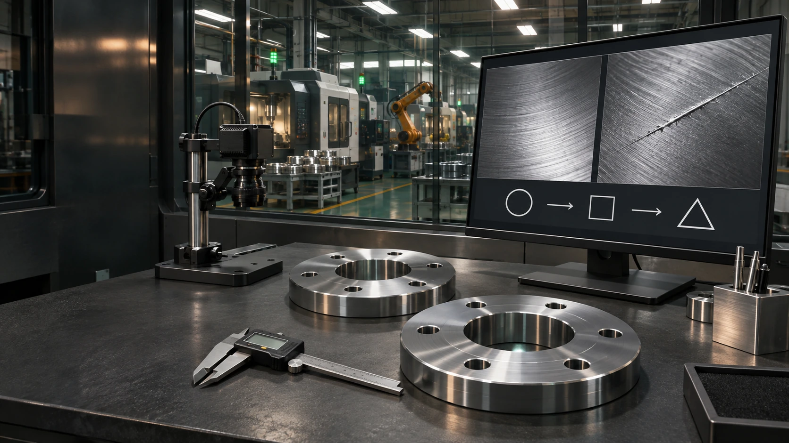

TECHNICAL BRIEFING
현장의 장비로 보는
AI 기술 브리핑.
이 부품은 출하해도 될까요? 이 전표는 누가 승인할까요?
제조와 사무 현장에서 AI가 고객의 판단을 돕는 열네 장면을 약 4분 30초의 한국어 해설로 따라가 보세요.
FIELD NOTES
장면별 기술 해설
사진 속 번호를 누르면 장비와 데이터의 역할을 확인할 수 있습니다.
현장 이해를 위한 재현 이미지
한국어 나레이션AI 합성 음성
이 장면의 전체 대본
DEMONSTRATIONS
두 가지 업무 시연
모의 데이터로 구성한 원본 음성 시연입니다. 현장 검수와 사내 문서 검색의 처리 과정을 자세히 볼 수 있습니다.
RETURN ON INVESTMENT
우리 팀의 도입 효과는?
예시 조건을 현장 측정값으로 바꿔 보세요. 검토와 예외 처리에 남는 시간까지 도입 후 작업시간에 포함합니다.
계산 조건
금액 단위는 각 입력란에 표시됩니다.
월 확보 업무시간266.7시간
월간 시간 가치800만원
운영비 차감 후 월 가치600만원
첫해 순효익4,200만원
첫해 투자수익률77.8%
단순 회수기간5개월
계산식과 가정 보기
월 확보시간은 월 처리량 × (도입 전 분 − 도입 후 분) ÷ 60입니다. 월간 시간 가치는 이 시간에 시간당 인건비를 곱합니다.
첫해 순효익은 12 × (월간 시간 가치 − 월 운영비) − 초기 도입비입니다. 첫해 ROI는 순효익 ÷ (초기 도입비 + 12개월 운영비) × 100입니다. 단순 회수기간은 초기 도입비 ÷ 운영비 차감 후 월 가치로 계산합니다.
정상 운영 개시일부터 12개월간 처리량이 일정하다고 가정합니다. 초기 비용에는 구축·연동비를, 운영비에는 사내 서버·전력·RPA 라이선스·유지보수를 포함하세요.
위 금액은 확보된 업무시간을 환산한 예시입니다. 실제 현금 절감은 초과근무비·외주비 등에서 확인된 지출 변화를 별도로 측정합니다.
BRIEFING LIBRARY
회의에서 이어 보세요.
전체 발표에는 실제 적용 사례, 실증 로드맵, ESG와 투자 효과 계산기가 포함되어 있습니다. 예상 효과는 현장 조건과 입력값에 따라 달라집니다.